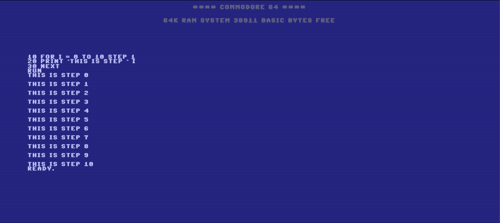

Basic Interpreter
Description
This is a personal project I created using React.js with a custom hook that runs the BASIC interpreter on the user's input. I came across the idea for this project while I was browsing for Commodore 64 emulators on the web. I found Yohanes Nugroho's BASIC implementation and thought it would be fun to use his code to make a Commodore 64 terminal in React and to dress it up in the retro style with CSS. I had to modify his codebase in certain areas to get it working with React and my app's workflow. In the end this was a very enjoyable project. It is hosted on Github pages here.
Stack
- React
- Javascript